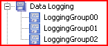

|
|
|
|
|
|
|
|
The Data Logging node contains all the data logging groups that are associated with the target.

You can use the Data Logging node to perform these functions:
Create a new data logging group
Paste a data logging group that was copied
Delete all data logging groups contained in the Data Logging node.
The Property Inspector for the Data Logging node displays the DRAM/SRAM usage and the estimated file size (if applicable) of all the data logging groups.

The following table lists the properties for the Data Logging node.
|
Property |
Description |
|
Start of Day (HH:MM) |
Using the 24-hour time notation, specify the start time to collect data for storage in a data file. This property displays when the Sampling type is set to Periodic. For more information on Start of Day use in Periodic data sampling, see Periodic Data Collection. |
|
Auto Flush Time |
Set to Enabled if you want to flush the data from the SRAM at a specified time before the SRAM gets full. |
|
Time (HH:MM) |
This field is only available when Auto Flush Time is set to Enabled. Specify the time when you want to flush data from the SRAM. |
|
DRAM Usage (KB) |
This property is read only and displays the amount of DRAM used by all the data logging groups. |
|
SRAM Usage (KB) |
This property is read only and displays the amount of SRAM used by all the data logging groups. |
|
Estimated File Size (KB) |
This property is read only and displays the estimated size of the data logging file of all the data logging groups. |
|
Estimated Days Logged |
This property is read only and displays the estimated number of days it would take to reach the file limit. |
For more information on DRAM, SRAM and file storage options, see Section 13.1.1.3, Storing Your Collected Data.